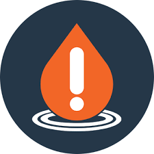

Introdução
Falar sobre o consumo de água de forma consciente, pode parecer clichê para muitas pessoas. No entanto, e ao longo dos anos, vários cientistas e conferências vêm nos alertando acerca do consumo exarcebado da água e suas consequências. E muitos estudos, como o IBGE, já alertou sobre a possível escassez e os conflitos que podem ser gerados entorno da água.
Desperdício de água e suas consequências
Do século XX pra trás, houve-se a ideia de que os recursos do planeta seriam inesgotáveis e que cada um poderia extrair e consumir o bem quisesse. Assim como muitas indústrias já vinham incentivando seus consumidores a consumirem cada vez mais seus produtos fabricados, o que por consequência geraria toneladas e mais toneladas de lixo no meio ambiente. Entretanto, e com o passar dos anos, perceberam-se de que as coisas não seriam assim e de que o planeta já começava a alertar indústrias e a população em geral de que algo não estava ocorrendo bem devido a essa extração em massa.
E atualmente, ainda vemos o consumo e descarte desenfreado de água: como a lavagem de carro excessiva, encanamentos quebrados (gerando vazamento de água), contaminação de lençois freáticos e por aí vai. E claro, com tudo isso, e se nao houver iniciativas públicas e pessoas, em um determinado momento podemos nos ver com a ausência de água, resultando numa crise global e irreversível.

Por que economizar a água?
Economizar água envolve uma responsabilidade significante, mas ao mesmo tempo que simples, pois esta advém com os simples atos que podem mudar completamente o destino do planeta. O nosso planeta possui apenas 3% de água potável, enquanto que os outros 97% é composto de sal. Ou seja, uma diferença enorme, em termos percentuais.
A água é um importante elemento de nossas vidas, e por mais que possa parecer infinita, é uma ilusão que ainda afeta alguns. Recentemente nós
se vimos em um momento de calor, no qual prejudicou muitas pessoas, em termos de saúde. Com isso a água se tornou a maior aliada em nossas vidas, no que tange na hidratação e refrescância desta. Por incrível que pareça, na produção de calças jeans, são necessários 2500 litros de água.
Formas de economizar a água
Já que vimos a sua importância e consequências da não econimização, vejamos algumas maneiras de reverter isso, com simples atitudes:
Reparo de Vazamentos:
Corrija vazamentos imediatamente em torneiras, tubulações e sistemas de irrigação. Um
pequeno vazamento pode desperdiçar grandes quantidades de água ao longo do tempo.
Banho Consciente:
Reduza o tempo do banho e considere desligar a água enquanto ensaboa. Instale chuveiros de baixo fluxo para reduzir o consumo de água durante o banho.
Vaso Sanitário Eficiente:
Utilize vasos sanitários de baixo fluxo ou coloque uma garrafa de água cheia no tanque para reduzir a quantidade de água usada em cada descarga.
Lavagem Eficiente de Roupas e Louça:
Utilize a máquina de lavar e a lava-louças apenas quando estiverem cheias. Ajuste as configurações para cargas menores, se disponível.
Cozinhe com Eficiência:
Use apenas a quantidade necessária de água ao cozinhar. Considere cozinhar alimentos no vapor para economizar água em comparação com a fervura.
Recolhimento de Água da Chuva:
Instale barris de chuva para coletar água da chuva e use-a para regar plantas ou para outras atividades que não requerem água potável.
Varredura em Vez de Lavagem:
Varra calçadas e áreas externas em vez de usar mangueira para lavar. Se precisar lavar, use uma vassoura de alta pressão.
Cuidado com as Torneiras:
Desligue a torneira enquanto escova os dentes ou ensaboa as mãos. Isso pode economizar uma quantidade significativa de água.
Quais programas estão envolvidos com a conscientização da água?
No brasil temos exemplos de programas que visam na corroboração na econimização da água potável. Vejamos:
Instituto Água Sustentável (IAS): tem por objetivo garantir a defesa, preservação e conservação do meio ambiente e do desenvolvimento sustentável.
Aliança pela Água: tem por objetivo garantir na construção, manutenção e segurança, em sistemas hídricos.
ONG Viva Rio: atua em diversas áreas, incluindo projetos relacionados à água, saneamento e educação ambiental.
Projeto Água Limpa: busca melhorar a qualidade da água no Rio Gandu, na Bahia, trazendo ações de educação ambiental e conscientização.
Fundação SOS Mata Atlântica: atua em diversas frentes, incluindo a conservação e recuperação de bacias hidrográficas, além de monitorar a qualidade da água.